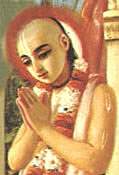

|

|
SRIVASA PANDITA, or
Srivasa Thakura, was a member of the Panca- tattva, consisting of Lord Caitanya
Mahaprabhu and His four immediate expansions and energies. Every night,
Lord Caitanya and His associates would chant the names of Krsna and dance
in Srivasa Pandita's house. Srivasa Pandita never made any effort to support
himself or his dependents. Because of his full dedication to Lord Caitanya
and His mission, Lord Caitanya provided for all his needs. (See Sri Caitanya-caritamrta, Adi- lila 10.8.) |
|
| © 2002-2004 ISKCON |